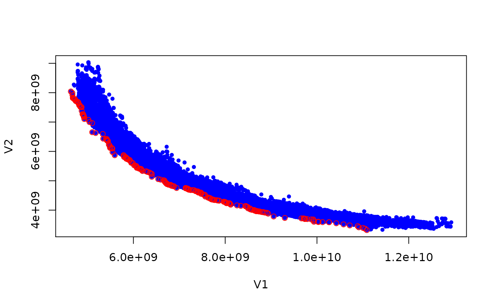
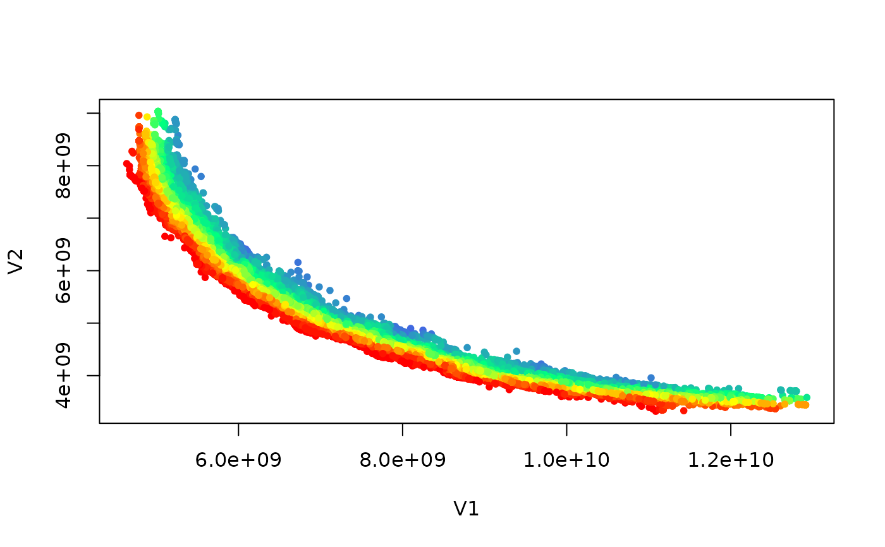

R/nondominated.R
nondominated.RdIdentify nondominated points with is_nondominated and remove dominated
ones with filter_dominated.
pareto_rank() ranks points according to Pareto-optimality,
which is also called nondominated sorting (Deb et al. 2002)
.
is_nondominated(data, maximise = FALSE, keep_weakly = FALSE)
filter_dominated(data, maximise = FALSE, keep_weakly = FALSE)
pareto_rank(data, maximise = FALSE)(matrix | data.frame)
Matrix or data frame of numerical
values, where each row gives the coordinates of a point.
(logical() | logical(1))
Whether the objectives must be
maximised instead of minimised. Either a single logical value that applies
to all objectives or a vector of logical values, with one value per
objective.
If FALSE, return FALSE for any duplicates
of nondominated points.
is_nondominated returns a logical vector of the same length
as the number of rows of data, where TRUE means that the
point is not dominated by any other point.
filter_dominated returns a matrix or data.frame with only mutually nondominated points.
pareto_rank() returns an integer vector of the same length as
the number of rows of data, where each value gives the rank of each
point.
pareto_rank() is meant to be used like rank(), but it
assigns ranks according to Pareto dominance. Duplicated points are kept on
the same front. When ncol(data) == 2, the code uses the \(O(n
\log n)\) algorithm by Jensen (2003)
.
Kalyanmoy Deb, A Pratap, S Agarwal, T Meyarivan (2002).
“A fast and elitist multi-objective genetic algorithm: NSGA-II.”
IEEE Transactions on Evolutionary Computation, 6(2), 182--197.
doi:10.1109/4235.996017
.
M
T Jensen (2003).
“Reducing the run-time complexity of multiobjective EAs: The NSGA-II and other algorithms.”
IEEE Transactions on Evolutionary Computation, 7(5), 503--515.
path_A1 <- file.path(system.file(package="eaf"),"extdata","ALG_1_dat.xz")
set <- read_datasets(path_A1)[,1:2]
is_nondom <- is_nondominated(set)
cat("There are ", sum(is_nondom), " nondominated points\n")
#> There are 583 nondominated points
plot(set, col = "blue", type = "p", pch = 20)
ndset <- filter_dominated(set)
points(ndset[order(ndset[,1]),], col = "red", pch = 21)

ranks <- pareto_rank(set)
colors <- colorRampPalette(c("red","yellow","springgreen","royalblue"))(max(ranks))
plot(set, col = colors[ranks], type = "p", pch = 20)
